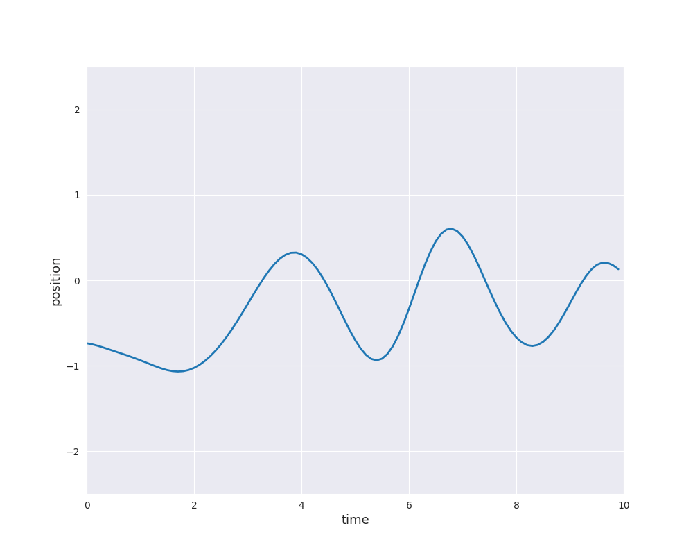

7.2. Gaussian Processes¶
A Gaussian proccess is a paricular type of stochastic process. But what do we understand by a stochastic process? Typically, a stochastic process denotes a collection of random variables with a time dependence. Hence, the term stochastic is justified by the consideration of random variables and process relates to the time dependence. We state the following brief definition:
Definition
A (temporal) stochastic process is a collection of \(\mathbb{R}^k\)-valued random variables \((X_t)_{t \in \mathcal{I}}\), where either \(\mathcal{I} = \mathbb{N}\) (discrete-time) or \(\mathcal{I} = \mathbb{R}_{\ge 0}\) (continuous-time).
Hence, this kind of stochastic process describes the temporal process of random events. In this context, it makes sense to say that the outcome of \(X_s\) happended before \(X_t\) for \(s < t\). Keep in mind that each random variable \(X_t\) is a map \(X_t: \Omega \rightarrow \mathbb{R}^d\) and \(X_t(\omega)\) for \(\omega \in \Omega\) is the outcome of a random experiment. The use of a stochastic process makes it possible to consider the outcomes of all random variables simultaneously. In this way, a so-called sample path or random path \((X_t(\omega))_{t \in \mathcal{I}}\) is obtained. The shape of these paths depend strongly on the underlying properties of the stochastic process.
A very famous example is Brownian motion or Wiener process which has numerous applications in physics, finance, biology and many other areas. For example, the movement of a large particle (like pollen) due to collisions with small particles (like water molecules). A nice simulation can be found on the website of Andrew Duffy at Boston University (please click on the image to follow the link):

Please note that the 2d simulation shows the current position of some particle as well as its previous path. In one dimension, we can easily simulate sample paths of Brownian motion starting at \(X_0 =0\) and plot the result as position against time:

The concept can be generalized to general index sets and in particular, to \(\mathbb{R}^d\). In the preceding animation time-dependent random functions are genarted, i.e., for each input \(t\) is mapped to a random variable \(f(t)\) (\(X_t\) with the earlier notation). For our machine learning applications we are interested in general inputs \(x \in \mathbb{R}^d\) with scalar random variables \(f(x)\). In other words, a time-index is too restrictive and therefore, we generalize the idea to general index sets. Moreover, in view of the nice properties of normal distributions an additional property is supposed:
Definition
A Gaussian process is a collection of random variables, any finite number of which have a joint Gaussian distribution.[1]
Henceforth, a Gaussian process is denoted by \((f(x))_{x \in \mathcal{I}}\). We assume that the random variables \(f(x)\), \(x \in \mathcal{I}\), take scalar values (i.e., values in \(\mathbb{R}\)). Moreover, \(\mathcal{I} = \mathbb{R}^d\) for some \(d \in \mathbb{N}\) unless stated otherwise. In this case, \((f(x))_{x \in \mathcal{I}}\) is also called a random field instead of random process. The additional Gaussian condition means that for an arbitrary number of elements \(x_i \in \mathbb{R}^d\), \(i=1, \dots, n\), the \(\mathbb{R}^n\)-valued random vector
is mulivariate normally distributed. By construction the Gaussian process yields random functions from \(\mathbb{R}^d\) to \(\mathbb{R}\). Moreover, Brownian motion is a specific Gaussian process.
In Normal Distribution, we have seen that a multivariate normal distribution is uniquely characterized by its mean \(\mu\) and covariance \(\Sigma\). A Gaussian process is an infinite-dimensional analogue if the index set is infinite. Indeed, we can select an arbitrary number of \(x_i\) values and consider the corresponding multivariate normal distribution of arbitrary dimension. It turns out that a Gaussian process is also specified by its mean and covariance, but they are functions instead of a vector and a matrix. More precisely, the mean is a function
and the covariance function or kernel is a function of two variables
Then, the finite-dimensional distributions of the Gaussian process are given by \(m\) and \(k\), i.e., the distribution of
is specified by
and
Thus, a Gaussian process is specified by choosing a mean function \(m\) and a kernel \(k\). We also write
If \(m\) is zero, the corresponding Gaussian process is called centered.
The kernel \(k\) generates the covariance matrix \(\Sigma\) and the covariance of a multivariate normal distiribution possesses certain properties such as symmetry and positive definiteness. Consequently, a general function of two variables will not be a valid covariance function of a Gaussian process. Clearly, a covariance function is necessarily symmetric, i.e., \(k(x, x^{\prime}) = k(x^{\prime}, x)\) for \(x, x^{\prime} \in \mathcal{I}\). Positive definiteness of covariance function can also be defined, but requires some additional mathematical background (refer to (4.2) in [1]).
A kernel \(k\) is called stationary if it depends only on the difference of two inputs, i.e., \(k(x, x^{\prime})\) depends only on \(x - x^{\prime}\) for \(x, x^{\prime} \in \mathbb{R}^d\). Furthermore, it is even isotropic if it depends only on the distance \(r = |x - x^{\prime}|\). Otherwise, the kernel is referred to as anisotropic.
The choice of \(k\) determines the properties of the sample paths of the Gaussian process. For example, the paths can be very rough as for Brownian motion or they can be very smooth as for the squared exponential or RBF kernel:
{kind=link}
- 1(1,2)
C.E. Rasmussen and C.K.I. Williams. Gaussian Processes for Machine Learning. Adaptive Computation and Machine Learning. MIT Press, 2nd edition, 2006. URL: http://www.gaussianprocess.org/gpml/.